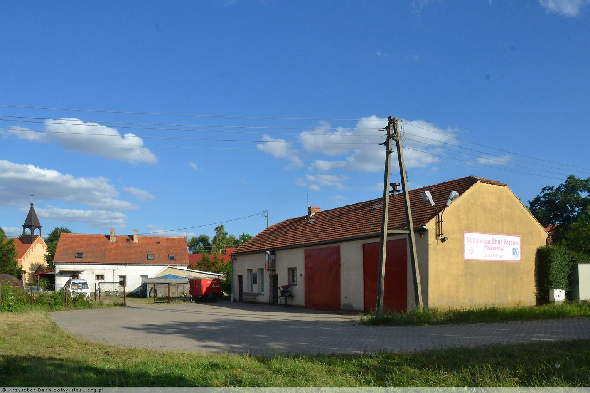
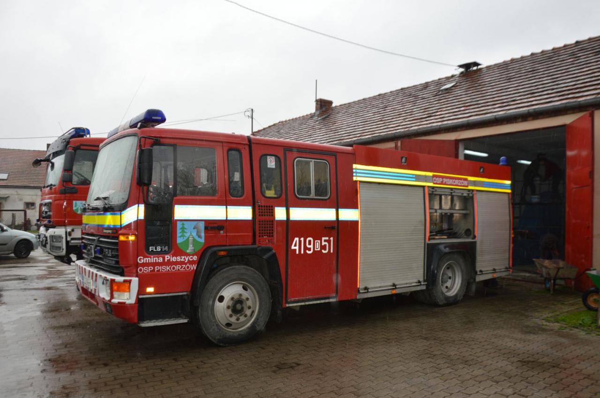
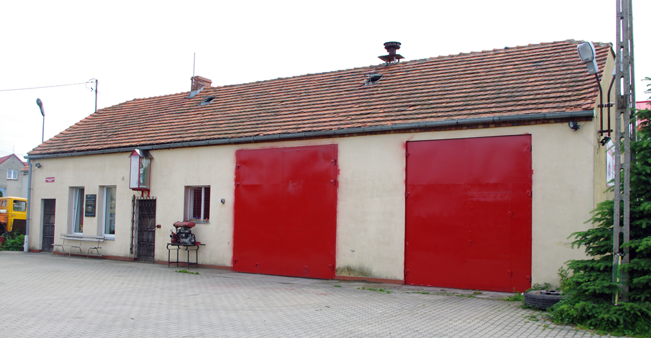

🚒 Ochotnicza Straż Pożarna w Piskorzowie
📜 Powstanie i historia
OSP Piskorzów została powołana 11 grudnia 2001 r. jako zarejestrowane stowarzyszenie (KRS 0000062272) i od tego czasu funkcjonuje jako jedyna ochotnicza straż pożarna w gminie Pieszyce (ok. 9 132 mieszkańców).

W 2016 roku jednostka przystąpiła do Krajowego Systemu Ratowniczo-Gaśniczego (KSRG) jako typ S‑2 – co podkreśla jej rolę w ogólnopolskich strukturach ratownictwa.

🧰 Sprzęt i wyposażenie
- GBA 2,5/25 na podwoziu MAN TGM 13.280 (2009)
- GBA 5/27 na Volvo FL614/E‑One (1994–1995)
- Przyczepka P0‑5 z motopompą

📈 Działalność i wyjazdy
Statystyki wyjazdów pokazują rozwój dotychczasowej aktywności:
- 2009: 76
- 2010: 42
- 2011: 49
- 2012: 56
- 2013: 63
W latach 2019 (116 wyjazdów) i 2020 (99 wyjazdów) jednostka aktywnie uczestniczyła w akcjach ratowniczych – rzadko zdarzało się, że nie dotarła pomimo wezwania.
🔧 Struktura organizacyjna
Jako stowarzyszenie działa na podstawie statutu, którego celem jest m.in. ochrona przeciwpożarowa, edukacja mieszkańców oraz udział w akcjach ratowniczych. Zarząd składa się m.in. z: Prezesa – Piotra Jabłońskiego, Naczelnika – Piotra Pliszki, Sekretarza – Pauliny Czarnik, a także skarbnika i gospodarza od 2021 r.

💡 Rola społeczna
OSP Piskorzów pełni kluczową rolę w lokalnym systemie bezpieczeństwa – nie tylko gasząc pożary czy usuwając skutki klęsk żywiołowych, lecz także prowadząc działania edukacyjne, prewencyjne oraz uczestnicząc w lokalnych uroczystościach.